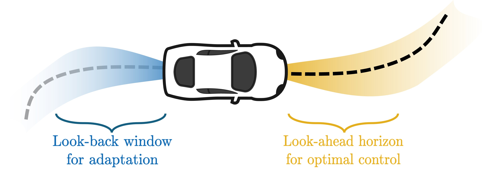
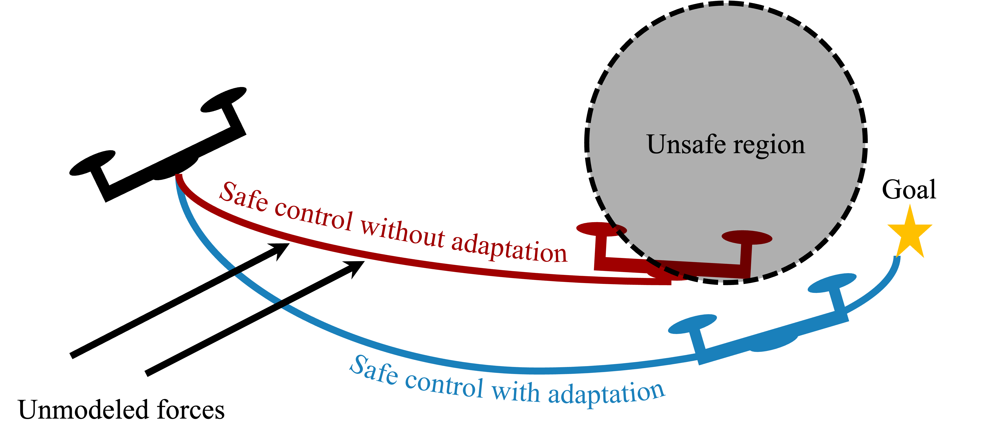
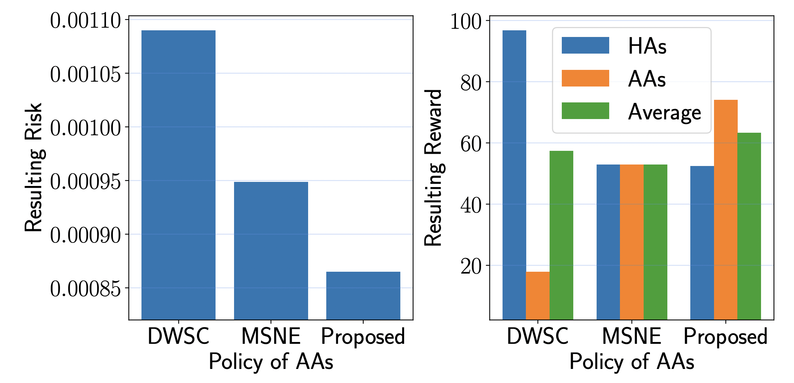
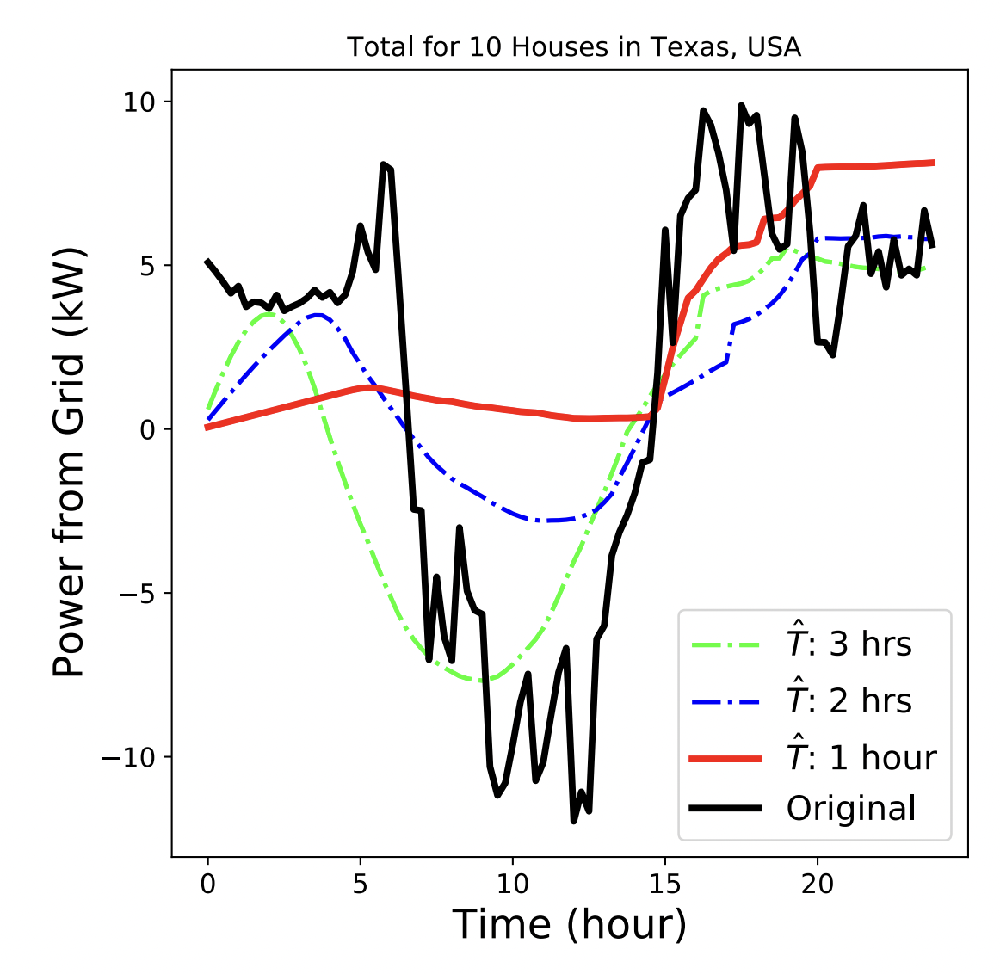

|

|
LLA-MPC: Fast Adaptive Control for Autonomous Racing
Maitham F. AL-Sunni,
Hassan Almubarak,
Katherine Horng,
John M. Dolan
IEEE/RSJ International Conference on Intelligent Robots and Systems (IROS), 2025
arXiv
We present Look-Back and Look-Ahead Adaptive Model Predictive Control (LLA-MPC), a real-time adaptive control framework for autonomous racing that addresses the challenge of rapidly changing tire-surface interactions. Unlike existing approaches requiring substantial data collection or offline training, LLA-MPC employs a model bank for immediate adaptation without a learning period. It integrates two key mechanisms: a look-back window that evaluates recent vehicle behavior to select the most accurate model and a look-ahead horizon that optimizes trajectory planning based on the identified dynamics. The selected model and estimated friction coefficient are then incorporated into a trajectory planner to optimize reference paths in real-time. Experiments across diverse racing scenarios demonstrate that LLA-MPC outperforms state-of-the-art methods in adaptation speed and handling, even during sudden friction transitions. Its learning-free, computationally efficient design enables rapid adaptation, making it ideal for high-speed autonomous racing in multi-surface environments.
|
|

|
Safety Embedded Adaptive Control Using Barrier States
Maitham F. AL-Sunni,
Hassan Almubarak,
John M. Dolan
American Control Conference (ACC), 2025
arXiv
In this work, we explore the application of barrier states (BaS) in the realm of safe nonlinear adaptive control. Our proposed framework derives barrier states for systems with parametric uncertainty, which are augmented into the uncertain dynamical model. We employ an adaptive nonlinear control strategy based on a control Lyapunov functions approach to design a stabilizing controller for the augmented system. The developed theory shows that the controller ensures safe control actions for the original system while meeting specified performance objectives. We validate the effectiveness of our approach through simulations on diverse systems, including a planar quadrotor subject to unknown drag forces and an adaptive cruise control system, for which we provide comparisons with existing methodologies.
|
|

|
Rethinking Safe Control in the Presence of Self-Seeking Humans
Zixuan Zhang*,
Maitham F. AL-Sunni*,
Haoming Jing*,
et al.
AAAI Conference on Artificial Intelligence, 2023
arXiv
Safe control methods are often designed to behave safely even in worst-case human uncertainties. Such design can cause more aggressive human behaviors that exploit its conservatism and result in greater risk for everyone. However, this issue has not been systematically investigated previously. This paper uses an interaction-based payoff structure from evolutionary game theory to model humans' short-sighted, self-seeking behaviors. The model captures how prior human-machine interaction experience causes behavioral and strategic changes in humans in the long term. We then show that deterministic worst-case safe control techniques and equilibrium-based stochastic methods can have worse safety and performance trade-offs than a basic method that mediates human strategic changes. This finding suggests an urgent need to fundamentally rethink the safe control framework used in human-technology interaction in pursuit of greater safety for all.
|
|

|
On Smoothing the Duck Curve: A Control Perspective
Maitham F. AL-Sunni*,
Turki Bin-Mohaya*,
et al.
International Multi-Conference on Systems, Signals & Devices (SSD), 2022
IEEE Xplore
The increased adoption of small-scale solar photo-voltaics (PVs) has led to drastic changes in the aggregate load profile in multiple locations, resulting in what is called the "Duck Curve." This adds a burden on system operators and might, in fact, jeopardize real-time operations and control. In this paper, we address these issues via learning-based control and develop an online method to flatten the duck curve by optimizing standard-sized batteries. In particular, we use deep learning in conjunction with model predictive control (MPC), i.e., we forecast solar power and demand and then utilize these forecasts to optimize storage over a prediction horizon. In our approach, forecasts take into account behavioral aspects of load consumption, and we also propose an objective function that mimics the Peak-to-Average power ratio. We have conducted numerical experiments using real data, and the results are promising, demonstrating a reduction of about 67% of the Peak-to-Average power ratio.
|
|
{kind=link}